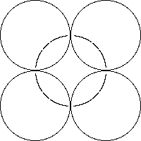

Images of circle inversion limit sets can be constructed using variants of the deterministic and random IFS algorithms.
However, the nonlinearity of circle inversions makes both methods fill up the limit set very slowly.
Specifically, if part of the limit set passes through a point of tangency of two inverting circles, successive inversions in these circles will fill in the limit set (the circle orthogonal to all four inverting circles) VERY slowly.
|  |
Near these circles, inversion moves points very little, so many inversions are needed to fill in the picture.
Return to Mandelbrot's method.